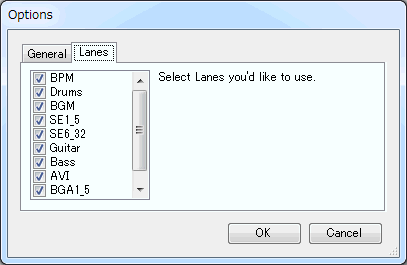
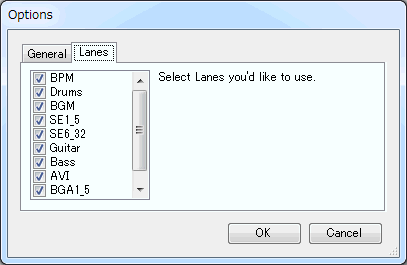
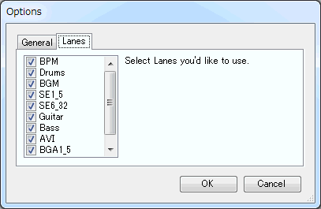

| Miscellaneous |
|---|
| Options |
Click [Tool(T)] → [Option(O)] in the menubar to show Options dialog.

General
Auto focus
Most recently used files list
Don't play BGM preview automatically whe WAV clicked
Play sound when WAV chip is placed
Lanes
Check this box to to switch the focus between the edit tab and score region automatically.
Check this box to show "Recent files" you edited in the [File(F)] menu. You can specify a number of recent files, too.
If you enables [preview] feature, the preview sound is automatically played when you click each WAV cell in the [WAV] tab. However, if you checked this [Don't play BGM preview automatically whe WAV clicked] box, the BGM files are not previewed regardless of [preview] settings (except you click [Preview] button in the Sound property etc).
To play sound when you set WAV chip to the score, enable this checkbox.